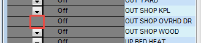
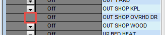
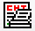

FAQ: PH Home Screen - Concepts & Facilities
Knowledge Notes
The PowerHome Home Screen is the focal point of almost all PH activities.
Understanding well its various features, icons, and capabilities will make using PH a lot easier to use, and your efforts more productive.
This tutorial will examine the many features of this Home Screen. There is no "standard" Home Screen configuration, as what appears there is totally customizable to suit the User's choices. The example shown below is a common configuration, as it shows many of the critical actions occuring in real-time.
NOTE: When you start PowerHome, or Initialize it, the PH window opens as a blank "clean slate". To cause the window to be populated with your favorite sub-windows (as above, for example), you can insert the following sample Macro Code in your Initialize Macro, that is triggered by a PH Start or Init...
The code in line 20 forces Windows to bring the PowerHome window to the foreground and give it focus, while the code in line 30 opens (respectively) the PowerHome Explorer, Insteon Explorer, Device Status windows.
The list of PH windows that can be opened includes...
- 1 - Control Center
- 2 - Device Status
- 3 - Web Center
- 4 - PowerHome Explorer
- 5 - Insteon Explorer
- 6 - PowerHome Status
- 7 - Palm Pad
- 8 - Eventlog
- 9 - Multi-Editor
The
above Macro Code will cause the designated windows
to be open in the same position & size as they were when PH was last shutdown.
TOOL BAR ICONS
First, let's look at each of the Tool Bar icons, to understand what they do.
Each number labeled Toolbar icon will be examined, in the following dialog.
- The "Initialize" icon [] causes PH to be re-initialized. This is essentially a re-start, except that the PH "Triggers" treat a Restart differently from an Initialize. If you want to take the same, or different, actions upon either event then you need to define two Trigger events in the "Trigger ID" field.
- The "Connect" icon [] causes PH to connect to the PLC/PLM controller. NOTE: When a connection is "Active" the icon is highlighted.
- The "PH Explorer" icon [] opens the window that allows you to select what detailed area of PH you wish to explore.

To open a different database (for instance to look at one of the sample db's included with PH, or to look back at one of your earlier db's to see what how an older configuration was set up, click on the PH Explorer (3) icon. This will add the db Tools below the Top Toolbar.

- Icon 4 is the Multi-Edit icon () that opens up the Editor Window for all of the editable items associated with PH. The red boxed list shows the various target editors available. Pick the appropriate editor to properly configure the editor's functions to fit the target application...
`
- Icon number 5 icon () opens the Insteon Explorer window, which dynamically shows ongoing operations..

- The 6th icon () Opens the "Wizard" that helps you set up many basic functions. This is a powerful tool to help you get started, if you are a new user. Other than initial setup configurations, this icon will seldom be used.
- Icon 7 (), opens the Control Center, which is a specialized area of PH that allows you to create your own custom control access to virtually all of the PH features and devices.
See this Tutorial, for an introduction to designing your own custom Control Center page... Control Center Tutorial
- Icon number 8 (), opens the Device status window. This window shows the real-time status of all "Displayed" devices and allows real-time control of those devices so they can be turned on/off or set to desired light levels.
If you do not want to display a particular device in the Status window, then in the Insteon Explorer>Devices tab, check the "Do Not Display" parameter.

Typically, one would not want to display Remote Switches linked to a Master (such as at both ends of a hallway), or the PLM or IRLink devices. Checking "Dont Display" will prevent the Device from appearing in the Device Status window.
If you have devices appearing in the Device Status Window, but that can't be controlled, (such as a door open/closed state) then check the "No Control" parameter in the Insteon Explorer>Types tab. This will make the Device Status window eliminate the option to turn the device on/off/etc (red box). Only the Status of the device will be shown.
 

- The 9th icon opens the () Palm Pad window. This screen appears similar to a standard X-10 palm pad and is useful for quickly testing your X-10 control with a minimal of setup.
You can select the controller from which you want to send as well as the house code.
- Icon 10 opens the () PowerHome Status window. This presents a real-time view into what is going on with PH, and is very handy to have shown. This window displays three sub-frames, as follows. . .

The Top Frame "System Status" displays the PowerHome and Windows OS continuous running time ("Up Times" ) since last restart/reset.
This Frame also displays what the next Timed Event will be. Handy if you are wondering when an event will happen so you can see actions occurring in the Event Log (bottom Frame).
NOTE: When you toggle OFF the Timed Events (icon 12) there will be nothing shown under the "Upcoming Timed Events:" label in the System Status frame. When this icon is enabled there will be an upcoming event listed (unless there are absolutely no timed events that are defined).
The bottom Frame is a real-time snapshot of the last few Event Log entries. It gives you some idea of what is happening, but to get full details, you need to open the actual Event Log (icon 13).
- Icon 11 launch's the () Web Center page, which is any ANY web page (it doesn't have to be from the PH webserver) and can be set to a users other server, a PSP page, ASP, etc.
The location of this web page is determined by the Web Center parameter in the "pwrhome.ini" file. That parameter is defaulted to http://127.0.0.1 but can be set to any valid IP address.
[Web Center]
home=http://127.0.0.1/
- Timed Events () can be enabled/disabled with icon 12. This is very useful when debugging in PH, as it stops "clutter" in the Insteon Raw Log and the Event Log Windows so you can more readily find the Insteon traffic you are trying to trace. The icon is a toggle that has a highlighted background when Timed Events are turned on. Sometimes the icon is slow to change its appearance in real time, but you can readly tell if Events are enabled, or not, by looking at the System Status frame in the PowerHome Status window. If Timed Events are turned OFF, the there will be no entry below the Upcoming Timed Events: label. It will be blank as shown below...
- The Event Log () button is icon 13. Clicking on this icon will open up the Event history window showing chronological actions taken over whatever length of time the Log Size is set at.
Since so much information is logged, the Event Log and the database can grow to enormous proportions if the log is not
periodically trimmed. You have full control when the Event Log is trimmed and how many days worth of information you
want to maintain. The Event Log is trimmed using the macro command "Trim Event Log" or the formula function
ph_trimeventlog. This command allows you to empty the log except for the last X days.
You can set X to any value you
want, but would probably be satisfied with 2. You
To trim automatically, create a Timed Event (saw at 2:00am) that executes "ph_trimeventlog(2)" That will trim the Log to two days of entries. A "7" would trim to a week, etc.
- Icons 14-18 () provide Auto Arrangements of all windows you have open and showing in the PowerHome window. These icons arrange the windows as Tiled side-by-side, Tiled Vertically, Tiled in Layers, and The last icon allows you to arrange the windows as you choose.
If you like PH to start-up with certain windows showing, you can create a Trigger action to automatically open your preferred windows on re-initialization or startup. The following triggers call an Initialization macro on both re-init and startup (but different macros could be called if desired)...
As described at the beginning of this document, you can run an Initialization Macro, using code similar to the following to bring PH to the foreground for control, then open your windows. In this example the PowerHome Explorer, PowerHome Status, and Device Status windows are opened. They will be opened with the same size/position settings they had when last visible.
The parameter in the ph_openphwin() function is an integer from 1 to 9 that designates the type of PowerHome window to open.
1 - Control Center, 2 - Device Status, 3 - Web Center, 4 - PowerHome Explorer, 5 - Insteon Explorer, 6 - PowerHome Status, 7 - Palmpad, 8 - Eventlog, 9 - Multi-Editor
- The "Question Mark" () icon Opens up the PowerHome Help window.
- The rightmost icon () is "Exit" which is the same as clicking on the red "X" on the top right of the PH window, and causes PH to terminate and close down.